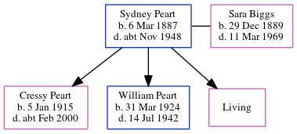

Sydney Ralph Peart 1887 - c1948
[ Home ] | [ Calendar ] | [ Surnames Index ] | [ Census Index ] | [ Family History ]A locomotive engine driver, Sydney Peart was born in Tynemouth, Tyne and Wear, England on Mar 6, 18871,2 and married Sara Biggs (with whom he had 3 children: Cressy, William Frederick and Doreen, along with 1 surviving child) in Tynemouth around Nov 19084. On Sep 29, 1939, he was living at 15 The Quadrant in Tynemouth1.
He died c. Nov 1948 in Tynemouth3.
Children
- Cressy was born on Jan 5, 1915
- William Frederick was born on Mar 31, 1924
Citations
- 1939 Register - Findmypast (was the head of the household)
- England & Wales births 1837-2006 - Findmypast
- England & Wales deaths 1837-2007 - Findmypast
- England & Wales Marriages 1837-2005 - Findmypast
Media
England & Wales marriages 1837-2005 - BMD/M/1908/4/AZ/000293/117
England & Wales births 1837-2006 - BMD/B/1888/2/AZ/000440/320
1939 Register - TNA/R39/2949/2949K/012/19
England & Wales deaths 1837-2007 - BMD/D/1948/4/AZ/000763/009
Family Tree
Generated by ged2site. Last updated on Jun 11, 2024